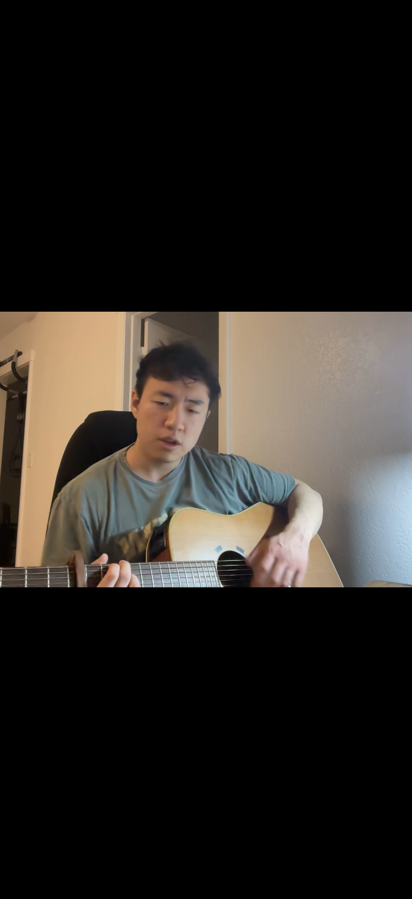

Guitar
Inspired by Tumanov’s song page.

-
Matilda — Harry Styles
-
The Only Exception
-
What Do You Mean?
-
Ulvsblakk — Ulver
-
Dust in the Wind — Kansas
-
emily — Jeremy Zucker and Chelsea Cutler
-
IMG_9332
-
Stay — Post Malone
-
Heather — Conan Gray
-
Less Than Zero — The Weeknd
-
The Man Who Can’t Be Moved — The Script
-
Breathe — Taylor Swift
-
Movie on 2-12-26 at 19.23